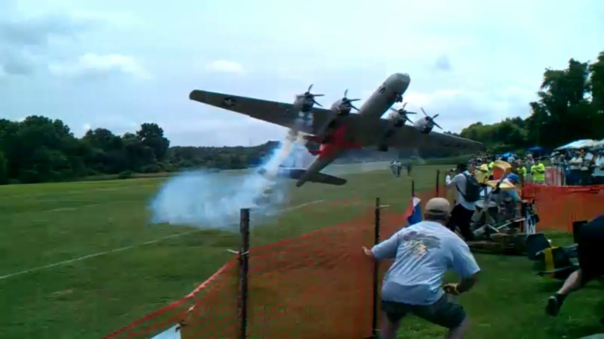
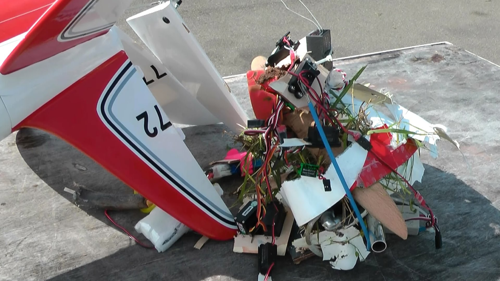
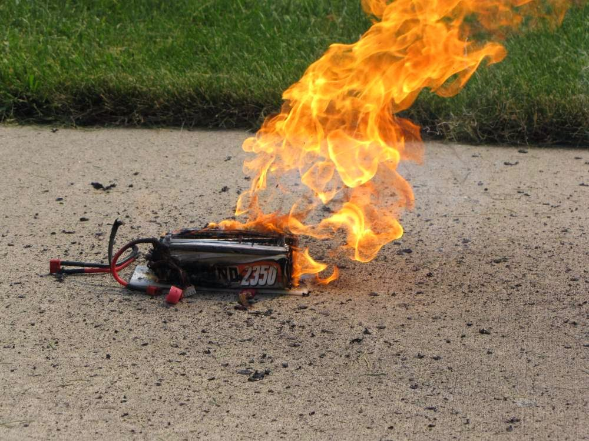

Les dangers de l'aéromodélisme
Et oui la pratique de l’aéromodélisme peut être dangereuse, nous allons voir en détail les dangers liés à cette pratique.
Il faut bien se rendre compte qu’un modèle n’est pas un joué. Que ça soit un drone, un avion, un hélicoptère ou autre chose. Même les drones de loisir que l’on retrouve dans les magasins de jouets peuvent être dangereux donc ne faites pas n’importe quoi.
Les dangers possibles
Se faire entailler par une hélice
Une hélice, ça tourne très vite. Ça peut vous entailler voir vous emputer pour les plus gros modèles donc prudence. Ne faites jammais voler votre modèle proche de vous ou d’autres personnes.

Crash
Faites très attention à l’endroit ou vous volez : préconnisez les terrains adaptés ou choisissez un endroit à l’abri. Je vous invite à lire mon article sur Où voler avec mon drone ou avion. Lors d’une perte de contrôle, votre modèle peut se crasher sur une voiture ou une maison et oui, ça peut faire de gros dégats selon la taille de l’engin.
Avant chaque décollage, faites une checklist de votre modèle :
- Moteur
- Gouverne
- Fixation
- Utilisation des fréquences par les autres personnes
- Etc

Batteries
De nos jours les modèles électriques utilisent de plus en plus souvent des batteries au lithium. Celles-ci peuvent être très dangereuses et brulées. Il suffit d’une mauvaise charge, un choc suite à un crash. Allez lire mon article sur les batteries au lithium, il vous apprendra les dangers liées à celles-ci et comment les protéger :) ici

Environnement
Et oui, vous devez savoir que l’espace aérien est très réglementé. Selon la zone où vous voulez voler, vous aurez une hauteur maximum à ne pas dépasser et des zones sensibles à ne pas survolez : les zones proches des aéroports, aérodromes et centrales nucléaires sont strictement interdites ainsi qu’au-dessus d’une agglomération.
Je vous conseille de vous rendre sur ce site mis en place par le gouvernement. C’est une carte intéractive qui décrit les zonnes de vols avec la hauteur maximum ici.
Brulures
Que vous utilisiez un modèle thermique ou électrique, les risques de brûlure avec un moteur ou une batterie chaud(e)s sont importants.
Pour finir, voici les 8 commandements d’un bon pilote
- Je ne volerais pas au-dessus de moi ou d’autres personnes
- Au-dessus d’une zonne sensible, je ne volerais pas
- La hauteur de vol, je respecterais
- Mon modèle en vue, toujours j’aurais
- Autrui, je respecterais
- Du bon fonctionnement de mon matériel, je m’assurerais
- Les fréquences, je respecterais
- Maitre de mon modèle, je serais
Je vous remercie d’avoir lu mon article et comme toujours n’hésitez pas à laisser un commentaire et bon vol à vous ! :)